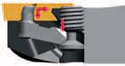

普通车削
普通车削是金属切削加工中应用最广泛的工艺方法，与之相关的车削刀具可应用于卧式车床、立式车床、镗床及数控加工中心上，加工工件的回转表面。
普通车削概述
车削的基本定义是用单点刀具生成圆柱形状，并且在大多数情况下，刀具是固定的，而工件是旋转的。在一些应用中，也可以是工件进行移动，而刀具绕其旋转，以进行切削，但其基本原理是相同的。刀具进给沿着工件的轴向进行移动，这意味着可把零件的直径车削为更小的尺寸。此外，刀具还能在零件未端朝中心方向进给，这意味着零件的长度将变短。通常，进给是这两种方向的组合，其结果是形成锥形或曲线表面，而当今的CNC车床控制单元可处理可能的绝大多数程序。
普通车削刀具的分类
按照加工工件表面的类型，车刀可分为外圆车刀、内孔车刀及端面车刀。
外圆车削刀具相对零件外圆表面进行加工，获得所需的尺寸、形位公差精度及表面质量。
又称为内孔车削或镗削，是用车削的方法扩大工件内孔或加工空心工件的内表面。与外圆车削不同，内圆车削时孔深决定了刀具悬伸，因此零件的孔径和长度对刀具的选择有一定的限制。
端面车削时刀尖始终处于与主轴轴线某点相交的直线上，结果得到一个过该点并与主轴轴线垂直的平面或锥面；端面车削刀具是指主切削刃能够对工件的端面进行切削的刀具。大多时候能够进行端面车削的刀具，也能满足外圆车削的要求。
按照普通车削刀具结构，车刀可分为整体车刀、焊接车刀、机夹车刀及机夹可转位车刀，目前，随着切削加工技术的进步，我公司应用的普通车削刀具大多为机夹可转位车刀，可其它类型车削刀具相比，机夹可转位车刀具有以下优势：
普通车削刀具的选用
普通车削刀具在选用过程中需要注意以下因素：
- 零件特点：
分析待加工零件的尺寸和质量要求：
工序类型影响刀具选择
- 零件
分析零件特点后，还需要考虑零件的其它属性，如：
- 机床
做为金属切削系统的重要一环，机床也影响着刀具的选用：
硬质合金可转位刀片
硬质合金可转位刀片是可转位刀具的主要组成部分。刀片型号、几何形状及刀片槽形的合理选择，直接影响刀具的切削性能、加工质量、刀具成本及综合经济效益。
- 可转位车削刀片型号的表示规则
目前，国内可转位刀片型号的表示规则主要以ISO标准为准，少量机夹可转位刀片采用了GB标准或原冶金部标准。
ISO标准可转位车刀片型号由一组给定意义的字母和数字代号按一定顺序位置排列组成，其中第12位断屑槽型号的定义各制造商都遵循相应的公司标准，表中以WALTER品牌的断屑槽型命名方式进行了举例。


- 可转位车刀片的选择
（1）基本形状
负前角基本形状刀片 |
正前角基本形状刀片 |
|
特征 |
双面和单面刀片 高强度切削刃 零度后角 |
单面刀片 锋利切削刃 低切削力 |
应用 |
外圆车削 大型零件 恶劣工况 |
内圆车削 外圆和内圆仿形切削 细长、不稳定和刚性差的工件 |
在选定刀片的基本形式后还应针对刀具所需的主偏角可达性选择刀片形状。应采用尽可能大的刀尖角以保证刀片强度和可靠性。
刀片的形状是根据被加工件的形状和尺寸来决定的，如上图所示。刀尖角越大，强度越大，切削温度会被分散，除去增加切削的法向力外，一般是有利的。从经济性来考虑，W型和T型由于可用刃数多，较为常用。作为数控车床用，最应推荐的是80°的C型。C型与W型和T型相比，只是将刀片对称反转安装，故重复定位精度要高很多。
选择要点：
（2）刀片大小
切深与刀片尺寸的大致对应关系：
（3）刀尖圆角半径
刀片刀尖圆角半径在车削工序中是一个关键因素，刀尖圆角半径影响表面质量、断屑和刀片强度，一般来说：
小刀尖半径 |
大刀尖半径 |
当切削深度增加时，试图将刀片推离切削表面的径向力变为了轴向力。
所以，一般来说，切削深度不应小于刀尖半径的2/3或进给控制在刀尖半径的1/2内。
修光刃（Wiper）刀片具有经过改进的刀尖，其刀尖半径大约由3-9个不同半径组成。这将增加刀片接触长度并对进给率或表面质量产生积极影响。
在理论上来讲，应用了修光刃（Wiper）刀片后，进给提高一倍可获得相同的表面质量；在相同的进给下，表面质量提高一倍。
（4）槽型
一般来说各制造商根据加工工序和被加工材料对槽型进行了定义，便于在应用过程中进行选用。
根据加工工序车削槽形一般分为三种基本型，优化用于精加工、半精加工和粗加工工序，某些品牌在此基础上又扩展出了超精加工和重载粗加工。每一种槽型的断屑范围可以通过进给和切削深度在图表中定义。
粗加工-R
大切深和高进给率。
要求高切削刃安全性的工序。
半精加工-M
半精加工到轻型粗加工工序
各种切削深度和进给率的组合
精加工-F
小切深和低进给时的工序。
要求低切削力的工序。
许多刀片槽型已优化用于某一工件材料类型，可查阅刀片槽型与应用部分了解公司常用刀片槽型的应用信息。
（5）刀片牌号
刀片牌号的确定主要按照零件材料、应用类型和切削工况来选择，实际应用时刀片槽型和刀片牌号相互支持，例如，刀片槽型强度不足可通过刀片牌号的韧性来补充。
刀片牌号的选择可参考刀具材料部分与公司常用车削牌号的选择与应用部分。
普通车削刀体
普通车削刀体用于安装可转位车削刀片来对各类零件的内外表面和端面粗、精车削，并达到图样所要求的尺寸、形位公差及表面质量。
- 普通车削刀体的型号表示规则
（1）外圆车削刀体的型号表示规则
（2）内圆车削刀体的型号表示规则

- 普通车削刀体的选择
（1）主偏角
主偏角Kr是切削刃和进给方向之间的夹角。在为某个工序选择车削加工刀具时它是非常重要的角度，并且会影响到切屑形状、切削力方向和切削的切削刃长度。
大主偏角 |
小主偏角 |
在满足刀具可达性的前提下，较小的主偏角可带来最佳的刀具刃口强度。
在标准车削刀具刀杆的型号规范中刀具型号第三位的字母确定了刀具的主偏角，包括了从A-X等几大类，在具体选择时可参照普通车削刀杆的命名进行选择。
切削主偏角同时影响到切削宽度和切削厚度的变化，较小的主偏角可以获得较高的进给率。
（2）夹紧方式
用于负型可转位刀片的外圆车削刀杆 |
||
刚性夹紧（D） |
||
杠杆夹紧（P） |
||
楔块夹紧 |
||
用于正型可转位刀片的外圆车刀杆 |
||
螺钉夹紧（S） |
||
 |
杠杆夹紧（P） |
 |
普通车削刀具与应用
- 外圆车削
（1）外圆车削刀具选择
首先要选择的是刀柄中刀片的夹紧系统。工序类型和工件尺寸（在某种程度上）对选择有决定作用。对大型零件进行粗加工与对小零件进行精加工的要求有很大的不同。 对于稳定的零件，应将刚性夹紧系统作为首选系统，用于所有从精加工到粗加工的外圆纵向切削工序。 如果是半精加工和精加工车削不稳定的零件，可以使用螺钉压紧式作为首选系统。
应选择最大的合适刀片刀尖角以获得高强度和经济性。刀具的主偏角影响切屑形状，切屑厚度等于90°角时的进给fn相对较小的主偏角（75°-45°），将降低切屑厚度，这样就可以保证相同铁屑厚度的情况下增加进给量。
- 端面车削
（1）端面车削刀具选择
在端面车削中，刀具在工件的端部沿径向向中心移动，在刀具选择中应注意以下几点：
对于大型、稳定零件的粗加工到精加工车削建议采用负前角基本形状刀片，采用刚性夹紧等方式。 对于小型零件、细长杆件、薄壁件建议采用正前角基本形状刀片，采用螺钉夹紧等方式。
刀片形状应根据要求的主偏角和刀具可达性或通用性要求来选择。 应选择最大的合适的刀片刀尖角以获得高强度和经济性。
在端面车削中，径向切削力高，这可能导致零件偏斜，有时还会产生振动。 因此，建议选择45°至75°的主偏角，这会分散一些径向力，使其成为指向卡盘的轴向力，以获得更好的稳定性。
（2）端面车削刀具的应用
工件精确旋转的能力对获得很小的尺寸公差至关重要。因此，夹紧工件在加工装夹中起着重要的作用。 比如，在薄壁零件的装夹中可以使用宽夹爪，这样可将夹紧力分布在较大的面积上。 在细长零件的装夹中将主轴和尾座正确对齐，也可提高最大刚性和保持良好的锥点接触，这两者都有利于加工出一流的成品。为防止出现锥度和振动，使用大主偏角（93°）、小半径和锋利的切削刃（PVD涂层牌号）。
高效的排屑可避免切屑划伤已车削表面，并防止切屑在第二次切削之前卡滞。另外，还必须消除切屑对零件操纵的干扰。 改变刀具路径能使排屑方向完全相反，因而可以解决问题。
在车削进入圆角时，使用93°至95°主偏角的刀具。在达到圆角时，刀片切削刃和工件之间的接触长度将变长，并会导致断屑问题。 为避免长切屑问题，改变刀具路径并从周边进刀，如图所示。
从工件周边向中心进刀。随着车削刀具向中心进刀，切削速度将会降低并在零件的中心变为零。由于径向切削力，材料将在刀片切断它之前断裂。 这种飞边的情况总是存在的，但可通过调整刀片槽形和进给将其尽可能减少。
- 内圆车削
使用内圆车削刀具的选择受到零件孔径和长度（孔的深度及悬伸）的极大限制。一般原则是选择最短悬伸和尽可能大的刀具尺寸。为工序选择正确的刀具并正确地应用和可靠的夹紧，可将刀具偏斜和振动减至最小。
（1）刀具的选择
较大孔径及稳定工况下的粗加工到半精加工建议选择负型刀片，可以获得最佳的刀具强度和经济性。 小孔径、细长或薄壁零件的轻型粗加工到精加工建议选择正型刀片，可以获得较小切削力和零件表面质量。 在内圆车削中，使用正前角基本形状刀片比使用负前角刀具产生的切削力低，因此更有优势。小刀尖角以及小刀尖半径，也有利于降低切削力。
镗削刀具的主偏角影响轴向和径向力的方向和大小。大主偏角产生大的轴向切削力，而小主偏角导致较大的径向切削力。因此，对于该工序推荐选择接近90°的主偏角，并且绝不要低于75°。
（2）内圆车削刀具的应用
因为受到零件孔径和长度的限制，内圆车削刀具的选择和应用方式比外圆车削更重要。

主偏角
镗削刀具的主偏角影响轴向和径向力的方向和大小，建议主偏角应尽量接近90°，切勿小于75°。
刀尖半径
刀尖半径和刀尖角对于降低径向力和切向力非常重要。一般而言，小刀尖半径及小刀尖角应作为首选。
选择刀尖半径的经验法则是刀尖半径应稍小于切削深度。
对于长悬伸内圆工序，不推荐使用修光刃（Wiper）刀片。
宏观和微观槽形
在内圆车削中，最好使用正前角基本形状刀片，因为它比使用负前角刀具产生的切削力低。薄涂层刀片或非涂层刀片一般比厚涂层刀片产生的切削力低，因此优先使用。
刀片磨损
刀片磨损改变刀片和孔壁之间的角度，这会影响切削作用，并导致振动。
在内圆车削过程中排屑对工序的性能和安全至关重要。
过短的切屑在加工过程中会消耗较高的功率，并会增加工振动和产生刀片月牙洼磨损。 |
|
较长的铁屑会引起排屑问题。 |
.png) |
较短的螺旋形切屑是内圆车削中希望获得的切屑形状。这样的切屑比较容易排出，在断屑过程中不会对切削刃造成大的压力。 |
.png) |
一般来说，有以下途径可以提高排屑性能：
内部切削液有助于排屑。
可以使用压缩空气代替切削液，并利用通孔将切屑通过主轴吹出。
倒置镗削，以使切屑远离切屑刃。
降低切削速度。
使用尽可能小的切削头，以使容屑空间最大。
内圆工序对刀具悬伸与直径的比值非常敏感。在任何情况下，都应使用尽可能大的直径和尽可能短的悬伸。
不同的镗杆材料可以适应适当的长度直径比。
| 镗杆类型 | 悬伸 | |
| 钢制镗杆 | 4×dmm | |
| 硬质合金镗杆 | 6×dmm | |
|
7×dmm | |
| 钢制防振镗杆，长型 | 10×dmm | |
| 硬质合金加强型防振镗杆 | 14×dmm |

另外，镗杆在带夹紧套的刀柄中推荐的夹紧长度约为3-4倍镗杆直径。
为使镗杆得到最佳性能，刀具和刀柄接触部分的设计和尺寸公差都非常重要。整体支撑总是要好于螺钉直接作用在镗杆上，因为后者会损坏镗杆。夹紧系统将镗杆在圆周上完全夹紧的方式可获得最高的稳定性。
用螺钉将镗杆夹紧在V形块上可能是合适的，但不推荐用于圆柱柄镗杆。
选择尽可能大的镗杆直径，但同时应确保在镗杆和孔之间留有足够的排屑空间。
确保与切削参数和切屑形状相适应的顺畅排屑。

选择尽可能小的悬伸，同时应确保镗杆长度，以便能够获得推荐的夹紧长度。夹紧长度不得小于3倍镗杆直径。
选择尽可能接近90度的主偏角，并且不要小于75度，这样可使切削力朝向镗杆。
作为优先选择，可转位刀片应具有正前角基本形状和正前角刀片槽形，以便刀具偏斜最小。
选择刀尖半径小于切削深度的刀片。
切削期间切削刃吃刀不足时会由于摩擦（而不是真正的切削作用）而产生振动。
切削刃吃刀过大时（大切深和/或进给）会通过刀具偏斜引起振动。
带薄涂层的刀片或非涂层刀片通常比厚涂层刀片可提供更低的切削力。当长度直径比较大时，这尤为重要。锋利的切削刃通常可通过最小化振动趋势来提高孔质量。

具有开放式断屑槽的槽形，通常对镗削更有利。
在某些工序中，可能需要使用具有更高强度的刀片牌号，以应对切屑堵塞或振动趋势。
如果需要改进切屑形状，可考虑改变刀具路径。
车削故障排除
刃口失效形式分析
失效形式 |
影响 |
措施 |
刃口磨损 |
工件尺寸逐渐改变或表面光洁度下降 | 采用耐磨性更好，即更低ISO范围，如P05，K10的材质降低切削速度注：刃口均匀磨损是一种正常刀具磨损形态 |
崩刃 |
部件尺寸或表面光洁度突然改变，产生火花或表面起毛刺 | 使用更高ISO范围的材质，如P40，K35等使用更强壮的刃口处理检查系统刚性增大主偏角 |
热变形 |
部件尺寸变化加快，切削操作不佳，功耗增加如持续存在可能导致断裂 | 降低切削速度减少进给量以正确的压力、方向和流速应用冷却液降低切削深度使用硬度更高的材料（更低的ISO范围，如P05，K15等） |
边界磨损  |
很可能会形成大的毛刺，如果破损断续增大则可能导致断裂 | 增大主偏角更换为较小的倒棱或刃口倒圆处理采用不同的材质减少进给量降低切削深度（圆形刀片）增加进刀次数，采用不同的切深使用正角刀片槽形 |